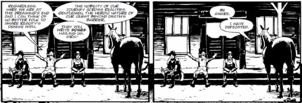

Something like a cross between High Plains Drifter, Preacher and Dante's Inferno: this is epic poetry in comic form, as the titular Ichabod adventures through the afterlife, his quest often lacking clarity but vengeance constant in his heart.
Art by Michael Dowling
| Story Title | Parts | Pages | w indicates a wraparound coverCovers | Year(s) | Issues | Writer | Artist | Colourist | Letterer |
|---|---|---|---|---|---|---|---|---|---|
Full title: "The Grievous Journey of Ichabod Azrael (and the Dead Left in His Wake)".The Grievous Journey of Ichabod Azrael… | 12 | 61 | 1678: Ben Willsher 1682: Siku 2 | 2010 | Reprints: FCBD2 (partial: ep1)1677-1688 | Rob Williams | Dom Reardon | <-- | Ellie de Ville |
| Manhunt | 11 | 55 | 1789: Simon Davis 1795: Clint Langley 2 | 2012 | 1789-1799 | Rob Williams | Dom Reardon | Peter Doherty | Ellie de Ville |
| One Last Bullet | 10 | 52 | 1901: Nick Percival 1905: Dave Kendall 1910: Glenn Fabry & Adam Brown [colours] 3 | 2014 | 1900-1910 | Rob Williams | Michel Dowling | <-- | Annie Parkhouse |
From Judge DreddEnd of Days | 15 | 92 | 2184: Steven Austin & Quinton Winter 2185: Patrick Goddard & Dylan Teague 2189: Neil Roberts 2192: Richard Elson 2199: Paul Williams & Chris Blythe 5 | 2020 | 2184-2195, 2197-2199 | Rob Williams | Colin MacNeil: 1‑6 Henry Flint: 7‑15 various | Chris Blythe | Simon Bowland: 1 Annie Parkhouse: 2‑15 various |
| >> Teasers << | |||||||||
| The Grievous Journey of Ichabod Azrael… | 1 | 1 | 0 | 2009 | 1650 | n/a | Dom Reardon | [monchrome] | n/a |
| >> Features << | |||||||||
| Behind the Thrills: Ichabod Azrael | 1 | 1 | 0 | 2010 | 1680 | Edward Kaye | Dom Reardon | [b&w] | n/a |
| year | episodes | pages |
| 2001 | 0 | 0 |
| 2002 | 0 | 0 |
| 2003 | 0 | 0 |
| 2004 | 0 | 0 |
| 2005 | 0 | 0 |
| 2006 | 0 | 0 |
| 2007 | 0 | 0 |
| 2008 | 0 | 0 |
| 2009 | 0 | 0 |
| 2010 | 12 | 61 |
| 2011 | 0 | 0 |
| 2012 | 11 | 55 |
| 2013 | 0 | 0 |
| 2014 | 10 | 52 |
| 2015 | 0 | 0 |
| 2016 | 0 | 0 |
| 2017 | 0 | 0 |
| 2018 | 0 | 0 |
| 2019 | 0 | 0 |
| 2020 | 15 | 92 |
| 2021 | 0 | 0 |
Comic strip data (excludes other content):